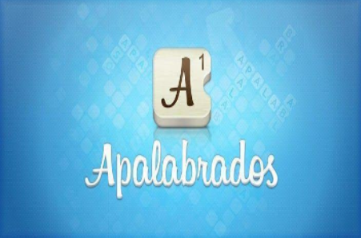
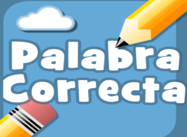
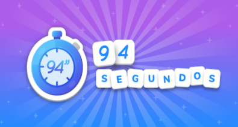
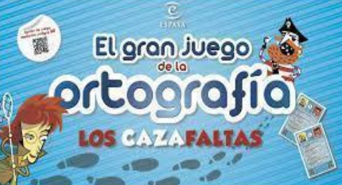

Se trata de un juego de letras basado en el famoso Words With Friends o el Scrabble, que tiene la ventaja de poderlo jugar con personas conectadas a través del mundo. La característica principal es anotar tantos puntos como puedas formando palabras en el tablero de juego de forma vertical u horizontal. El objetivo del juego es ganar más puntos que tú oponente formando palabras en el tablero. Tienes la opción de elegir un oponente entre tus amigos ingresando su email o nombres de usuarios y una persona al azar.
La palabra correcta es una app que toma la información del principal diccionario de lengua española el de la RAE. El juego se basa en una pregunta y en tres posibles respuestas de modo que no tienes prisa en responder, medita y piensa la respuesta correcta. El juego Adivina la palabra correcta es además de divertido muy instructivo. Enseguida te darás cuenta que el aumento de tu conocimiento de la lengua es amplio y rápido. Mejoraras en vocabulario y en gramática sin darte apenas cuenta. Dentro del juego aparecerán cientos de verbos, preposiciones, adverbios, conjunciones, etc.
Es un juego en el que tendremos que responder a preguntas durante 94 segundos. Debemos hacerlo rápido y con cabeza para hacer la mayor puntuación posible. Además, si vinculas tu cuenta FACEBOOK podrás competir contra tus amigos y marcaros unos piques de campeonato. La tipología de las preguntas sigue la siguiente estructura: Te preguntará sobre una categoría y tú con una letra especificada en la respuesta deberás encontrar una palabra y tendrás 94 Segundos para batir récords.
Es un libro-juego de la editorial Espasa basado en detectives que consiste en atrapar a los sospechosos siguiendo las pistas que van dejando en forma de faltas ortográficas que deberán ser resueltas, una manera de aprender reglas de ortografía divirtiéndose. Es muy importante motivar a los niños y reforzarles por los logros alcanzados. En este juego, la ciudad está llena de delincuentes ortográficos (El matahaches, El Tragatildes, Pepa la Comecomas, las peligrosas hermanas Minusculina y Mayusculona...). Los detectives cazafaltas (jugadores) deben atraparlos. Para ello cuentan con diversos expedientes policiales que les ayudarán a llegar a sus guaridas siempre y cuando el detective sepa la respuesta correcta a las 9 preguntas que le orientarán en su camino.
